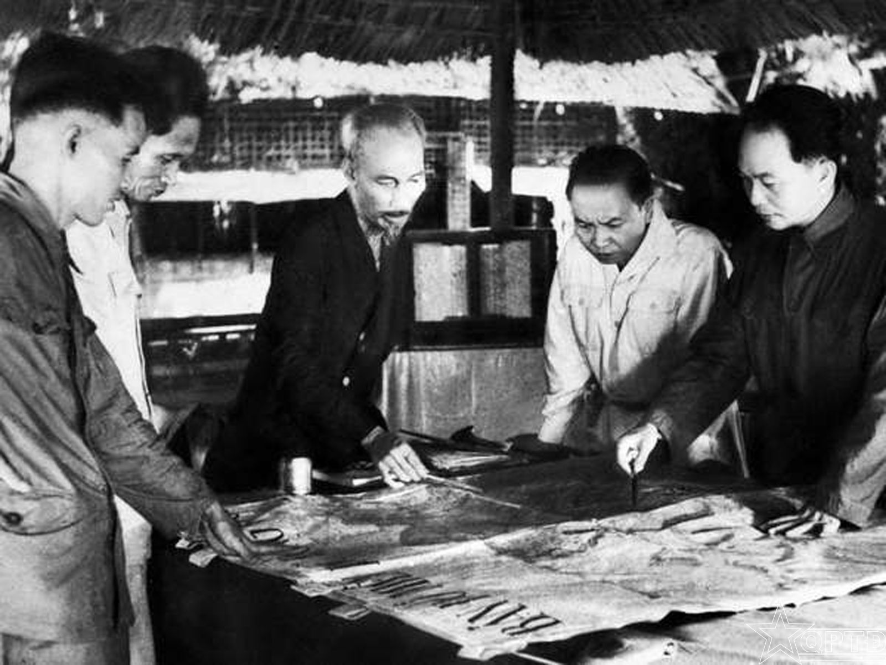
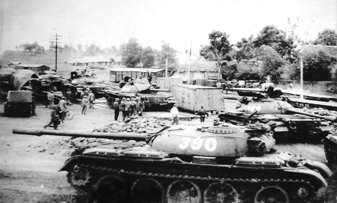

Kháng chiến chống Pháp | Kháng chiến chống Mỹ
Hai cuộc kháng chiến chống mỹ và chống pháp
Kháng chiến chống Mỹ (1955-1975) và kháng chiến chống Pháp (1946-1954) là hai cuộc đấu tranh quan trọng trong lịch sử Việt Nam, thể hiện tinh thần yêu nước và quyết tâm giành độc lập của dân tộc.
Giai đoạn 1945 - 1975 là một trong những thời kỳ biến động, hào hùng và khốc liệt nhất trong lịch sử Việt Nam hiện đại. Đây là 30 năm đấu tranh liên tục để giành độc lập, chống lại các cường quốc thực dân, đế quốc và đi đến thống nhất đất nước.


Bối cảnh: Sau khi Việt Nam tuyên bố độc lập vào ngày 2/9/1945, thực dân Pháp quay lại với âm mưu tái chiếm Đông Dương. Dù Chính phủ Việt Nam Dân chủ Cộng hòa đã nỗ lực đàm phán hòa bình, những hành động quân sự ngày càng leo thang của Pháp buộc Việt Nam phải bước vào cuộc chiến tranh vệ quốc.
kháng chiến chống thực dân pháp (1946-1954)
Toàn quốc kháng chiến
19/12/1946
Chủ tịch Hồ Chí Minh ra Lời kêu gọi toàn quốc kháng chiến, chính thức mở đầu cuộc chiến tranh quy mô lớn trên cả nước.
Chiến dịch Biên giới Thu Đông
1950
Việt Minh giành thắng lợi, khai thông biên giới Việt - Trung, phá thế bao vây cô lập và bắt đầu nhận được sự viện trợ từ các nước Xã hội Chủ nghĩa.
Chiến thắng Điện Biên Phủ
07/05/1954
Trận quyết chiến chiến lược đánh bại hoàn toàn nỗ lực quân sự cao nhất của Pháp (Kế hoạch Navarre), gây chấn động toàn cầu.
Ký Hiệp định Genève
21/07/1954
Pháp và các bên liên quan buộc phải công nhận độc lập, chủ quyền, thống nhất và toàn vẹn lãnh thổ của Việt Nam, Lào, Campuchia. Vĩ tuyến 17 được chọn làm giới tuyến quân sự tạm thời.
Kết quả: Chấm dứt gần một thế kỷ ách thống trị của thực dân Pháp, giải phóng hoàn toàn miền Bắc, tạo hậu phương vững chắc cho giai đoạn tiếp theo.
kháng chiến chống đế quốc mỹ (1955-1975)
i cảnh: Sau Hiệp định Genève, Mỹ dần thay thế Pháp ở miền Nam Việt Nam, hỗ trợ chính quyền Việt Nam Cộng hòa nhằm chia cắt lâu dài đất nước và biến miền Nam thành tiền đồn chống cộng. Miền Bắc vừa xây dựng Chủ nghĩa Xã hội, vừa làm hậu phương chi viện cho tiền tuyến miền Nam.
Các giai đoạn chiến lược của Mỹ bị đánh bại:
Chiến tranh đơn phương (1954–1960)
Chiến tranh đặc biệt (1961–1965)
Chiến tranh cục bộ (1965–1968)
Việt Nam hóa chiến tranh (1969–1973)
Phong trào Đồng Khởi
1959 - 1960
Đánh dấu sự chuyển hướng của cách mạng miền Nam từ đấu tranh chính trị sang kết hợp đấu tranh vũ trang, làm rung chuyển hệ thống chính quyền cơ sở của đối phương.
Tổng tiến công Xuân Mậu Thân
1968
Đòn tấn công bất ngờ vào các đô thị lớn trên toàn miền Nam. Dù chịu tổn thất, chiến dịch này đã làm phá sản chiến lược "Chiến tranh cục bộ" và buộc Mỹ phải ngồi vào bàn đàm phán Paris.
Điện Biên Phủ trên không
12/1972
Đánh bại cuộc tập kích chiến lược bằng B-52 của Mỹ vào Hà Nội và Hải Phòng, đập tan ý đồ buộc Việt Nam nhượng bộ trên bàn đàm phán.
Ký Hiệp định Paris
27/01/1973
Mỹ cam kết chấm dứt chiến tranh, rút toàn bộ quân viễn chinh và quân đồng minh khỏi miền Nam Việt Nam.
Chiến dịch Hồ Chí Minh
30/04/1975
Cuộc tổng tiến công mùa Xuân 1975 kết thúc bằng việc giải phóng Sài Gòn, đánh dấu sự sụp đổ của chính quyền Việt Nam Cộng hòa.
Kết quả: Hoàn thành mục tiêu giải phóng miền Nam, thống nhất đất nước, chấm dứt hơn 30 năm chiến tranh và mở ra kỷ nguyên độc lập, thống nhất toàn vẹn lãnh thổ.